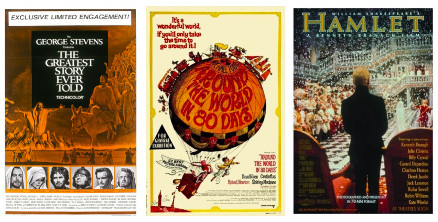

The Most Star-Studded Movie of All Time
Posted on 24 Nov 2016 in Data science
It's really easy to associate important subjects or people only with those that win prizes: books that won the Pulitzer, for example, or authors that won the Nobel Prize. Appropriate recognition and appreciation is never universal, but it almost always requires more time and evaluation in a historical context. Some prize-winners are super embarrassing in hindsight: frontal lobotomies winning the Nobel Prize in Medicine, Henry Kissinger and the Nobel Peace Prize, Crash over Brokeback Mountain for Best Picture. Similarly, many have been overlooked in their lifetimes for genius-level accomplishments: Einstein never won a Nobel Prize for relativity; Citizen Kane didn't win Best Picture or Best Director; Leo Tolstoy, Virginia Woolf, and Chinua Achebe never won the Nobel Prize.
So while counting people who've only won specific awards is never an exercise in pure quality, it does give a discrete data set. And I like to play with data. Following the 88th Academy Awards, a question popped into my head that I thought it'd be fun to answer:
"Which movie had the most Oscar winners in its cast?"
My assumptions:
- This only counts individuals who won competitive Academy Awards for Best Actor, Best Actress, Best Supporting Actor, or Best Supporting Actress. I'm not counting people who only won an Academy Honorary Award or Academy Juvenile Award.
- Only people who won an acting Oscar are considered. Many well-known actors have won Academy Awards in other categories (e.g., Mel Gibson and Kevin Costner for directing; Woody Allen, Emma Thompson, and Matt Damon for screenplays; Brad Pitt and George Clooney for producing). However, they're only considered here if they won an acting award.
- Similarly, I'm only counting people who were acting in the film. For example, Into the Wild was directed by two-time Oscar-winner Sean Penn, but he doesn't appear in the movie.
- No double-counting. Forty actors have multiple acting Academy Awards (Katharine Hepburn leads the pack with four), but each actor counts only once as an Oscar-winner for any given film.
- Roles credited as appearing as himself/herself are not counted, mostly because they're separately stored in IMDb.
- This only includes theatrically-released films. That excludes TV series, made-for-TV, and direct-to-video movies.
- I'm giving credit for someone winning an Academy Award at any point in their career. This means a person didn't have to win their Oscar prior to (or as a result of) the film in question. So The Sound of Music, for example, has two Oscar-winners (Julie Andrews and Christopher Plummer), even though only Andrews had an Oscar prior to the movie's release in 1965.
The data source I used is the Internet Movie Database (IMDb), which had more than 5.4 million actors and 17 million movies/TV shows as of 2016. There's a Python wrapper to access the database called IMDbPY. The package has some frustrating limitations, but it was enough to answer my question.
I also needed a list of all Oscar winners. I used the official database from the Academy of Motion Pictures Arts and Sciences. I did a "Basic Search" with Award Category "Acting ...(all)" and selected "Winners Only".
All my code and data are available here as a Jupyter notebook. Snippets below show my final results.
for x in final_counts[max(final_counts.keys())]:
title = x.keys()[0]
print '\n"{0}"'.format(title)
for films in x[title]:
print '\t{0}'.format(films.encode('utf-8'))
"Around the World in Eighty Days"
Charles Coburn
John Mills
Ronald Colman
Frank Sinatra
Victor McLaglen
John Gielgud
Shirley MacLaine
David Niven
"The Greatest Story Ever Told"
Joseph Schildkraut
José Ferrer
Martin Landau
Shelley Winters
John Wayne
Charlton Heston
Van Heflin
Sidney Poitier
"Hamlet"
Robin Williams
John Mills
Jack Lemmon
Kate Winslet
Julie Christie
Judi Dench
John Gielgud
Charlton Heston
So the answer is eight Oscar winners in one film. It's a three-way tie between Around the World in Eighty Days, The Greatest Story Ever Told, and Hamlet.

Around the World in Eighty Days (1956)
Around the World in Eighty Days won Best Picture in 1956, beating both The Ten Commandments and The King and I. The film was notable for the huge number of cameos, with over forty celebrities making short appearances. David Niven and Shirley MacLaine are the only two Oscar winners in this film that actually have significant screen time. Almost the entire cast is long-since retired or passed away in the sixty years since the movie was released, so it's almost certain to stay at its current number of Oscar-winners.
Of the eight Oscar-winners, four (Colman, Coburn, Sinatra, McLaglen) had already won their award by the time they appeared in the film, and four (Niven, MacLaine, Gielgud, Mills) won their award afterwards.
The Greatest Story Ever Told (1965)
The Greatest Story Ever Told also had a very large cast, although Charlton Heston, José Ferrer, Martin Landau, and Joseph Schildkraut all had significant, non-cameo parts. It was nominated for five Oscars, but ended up winning none (and wasn't even nominated for Best Picture). Lead actor Max von Sydow is still active, though well into his eighties, and was nominated for his second Academy Award in 2012. Angela Lansbury also appeared in the film and has been nominated for Best Supporting Actress three times. Either could possibly still push this film to a record nine.
Of the eight Oscar-winners, five (Heston, Ferrer, Schildkraut, Heflin, Poitier) had already won their award by the time they appeared in the film, and two (Landau, Wayne) won their award afterwards. Shelley Winters won two Oscars, one before and one after appearing in this film.
Hamlet (1996)
Hamlet was nominated for four Oscars; it won zero and wasn't nominated for Best Picture. Richard Attenborough appeared in the film and did win an Oscar, but for directing (Gandhi in 1983). Director and star Kenneth Branagh has been nominated for five Oscars in his career, including two for acting, but he has yet to win. He could potentially make this movie the lone recordholder someday.
Of the eight Oscar-winners, five (Christie, Gielgud, Heston, Lemmon, Mills) had already won their award by the time they appeared in the film, and three (Dench, Williams, Winslet) won their award afterwards.
Finally, it's interesting that none of these three movies, crammed to the brim with award-winners and future award-winners, had an Oscar-winning performance in their own film.
The runners-up
for n in np.arange(nmax,nlim,-1)-1:
mt = [x.keys()[0] for x in final_counts[n]]
print "\t{0:2d} films have {1} Oscar-winning actors in them:".format(len(mt),n)
for mts in mt:
print "\t\t{0}".format(mts.encode('utf-8'))
6 films have 7 Oscar-winning actors in them:
Main Street to Broadway
The Stolen Jools
How the West Was Won
Pepe
In This Our Life
The Swarm
13 films have 6 Oscar-winning actors in them:
Breakdowns of 1938
Gone with the Wind
Prêt-à-Porter
Murder on the Orient Express
A Time to Kill
Ben-Hur: A Tale of the Christ
The Good Shepherd
A Bridge Too Far
Variety Girl
Forever and a Day
The Longest Day
The First Wives Club
Nine
Some notes on the runners-up:
- None of the films with seven Oscar-winning actors have good odds to increase their count. The Swarm (1978) is the only movie in the set made after 1962, meaning almost all cast members from these films are either retired or dead.
- Of the films with six Oscar-winning actors, The First Wives Club (1996), A Time to Kill (1996), The Good Shepherd (2006), and Nine (2009) were all released in the last twenty years. Many actors in the casts could have long and possibly Oscar-winning careers still ahead of them.
- Cher appeared as herself in the movie Prêt-à-Porter [released as Ready to Wear (Prêt-à-Porter) in the US]. If this were counted as an acting role, it would bring the total number of Oscar-winning actors up to seven.
- The film Nine was heavily marketed during its release as starring six actors who had already won Oscars: Daniel Day-Lewis, Sophia Loren, Marion Cotillard, Penelope Cruz, Nicole Kidman, and Judi Dench. I think that's the record for award-winners at the time of filming, but I haven't explicitly verified it.